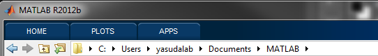
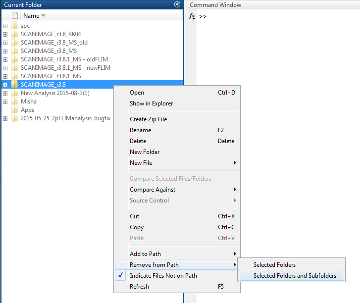
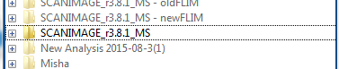

Know before you start...
Like all things Scanimage, this version is essentially always in beta, and is therefore prone to various bugs. Therefore, to insure you can still run your experiments even if the new software fails, you will not be required to overwrite your old program, and you can switch back to what you were using any time you like.
Note: The version of FLIMimage seems to differ a lot across machines, so your version may not necessarily be the same as the one bundled with this software. If you run into errors, an older version of FLIMimage is available which supports this package.
Initial Installation (Updated)
1. Download the updateScanimageVersion.m file - this file will install the upgrade for you. From MATLAB, right click on the file and select 'RUN'. The window below will open. Select which settings files you want to keep. If unsure, leave all of them selected. FLIM, SPC, and ypys are more likely to need replacing if you get bugs.
The installation file will back up your old Scanimage version and put the new version in the old version's folder, keeping the settings files of your choice. If you want to switch between multiple matlab versions, create a new folder named SCANIMAGE_r3.8.1_MS and set this as your Old Directory.
Select your directories - the Old directory is the scanimage folder you currently use (SCANIMAGE_r3.8.1_MS), and the new directory is the new scanimage version you want to install. Once you click 'done', this script will back up your old Scanimage directory and transfer the new program to the old location without overwriting the files you chose to keep. Make sure the folder you are using is named SCANIMAGE_r3.8.1_MS - if not, rename it.

3. Open MATLAB. Navigate to your main MATLAB folder:

4. In the folder browser, right click on the highlighted folder (your old Scanimage version), select Remove from path, Selected Folders and Subfolders

5. Now, right-click your new version, select 'Add to Path', 'Select Folders and Subfolders'. The new version should be highlighted:

6. You will need to repeat steps 4 and 5 every time you launch the new Scanimage until you are comfortable using it. Once you are sure it works for you, you can set the 3.8.1 folder as a default path in Home -> Set Path.
7. Double-click open the mdia_settings file (or enter the command edit mdia_settings.m in the command window) to set a few initial settings.
8. Save the mdia_settings.m file and close it. You're all set to start!
Created with the Personal Edition of HelpNDoc: Generate Kindle eBooks with ease